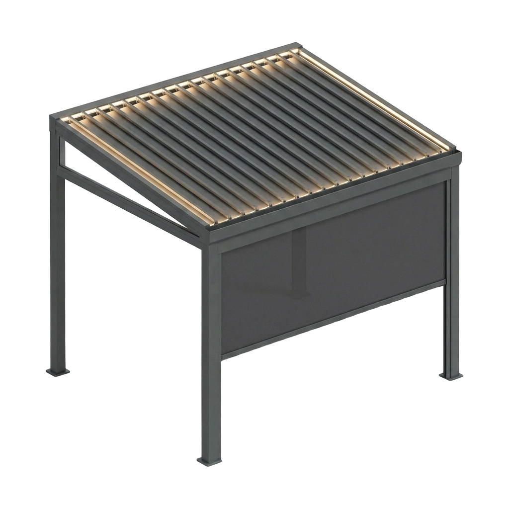
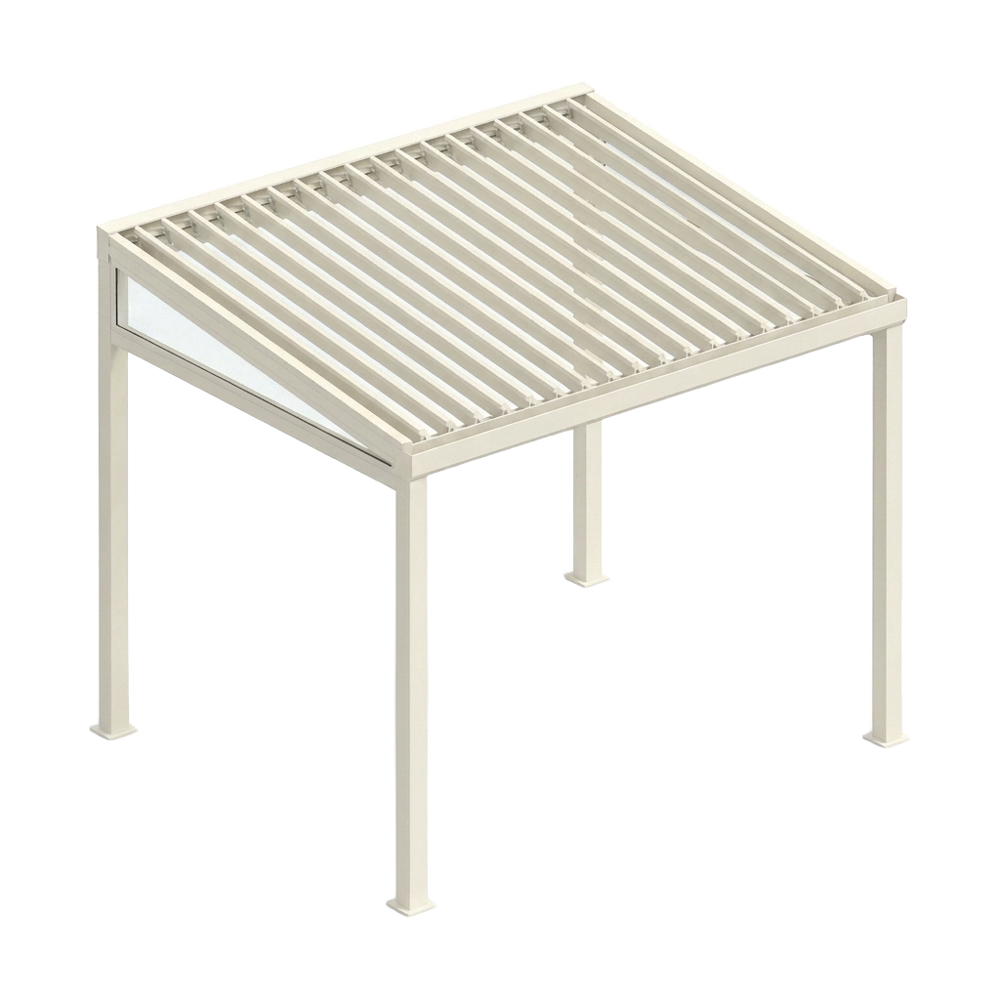
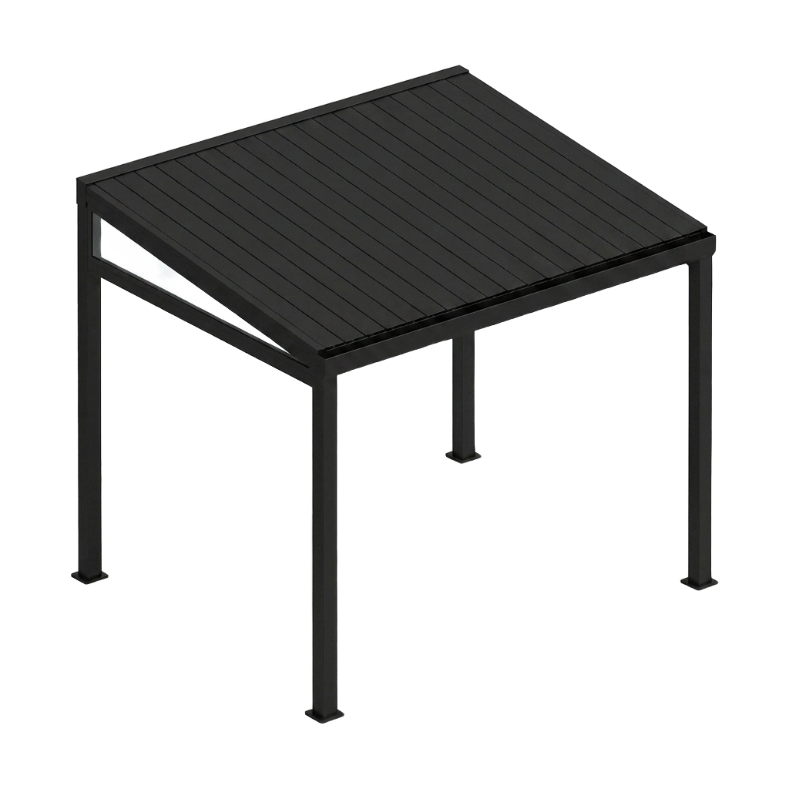
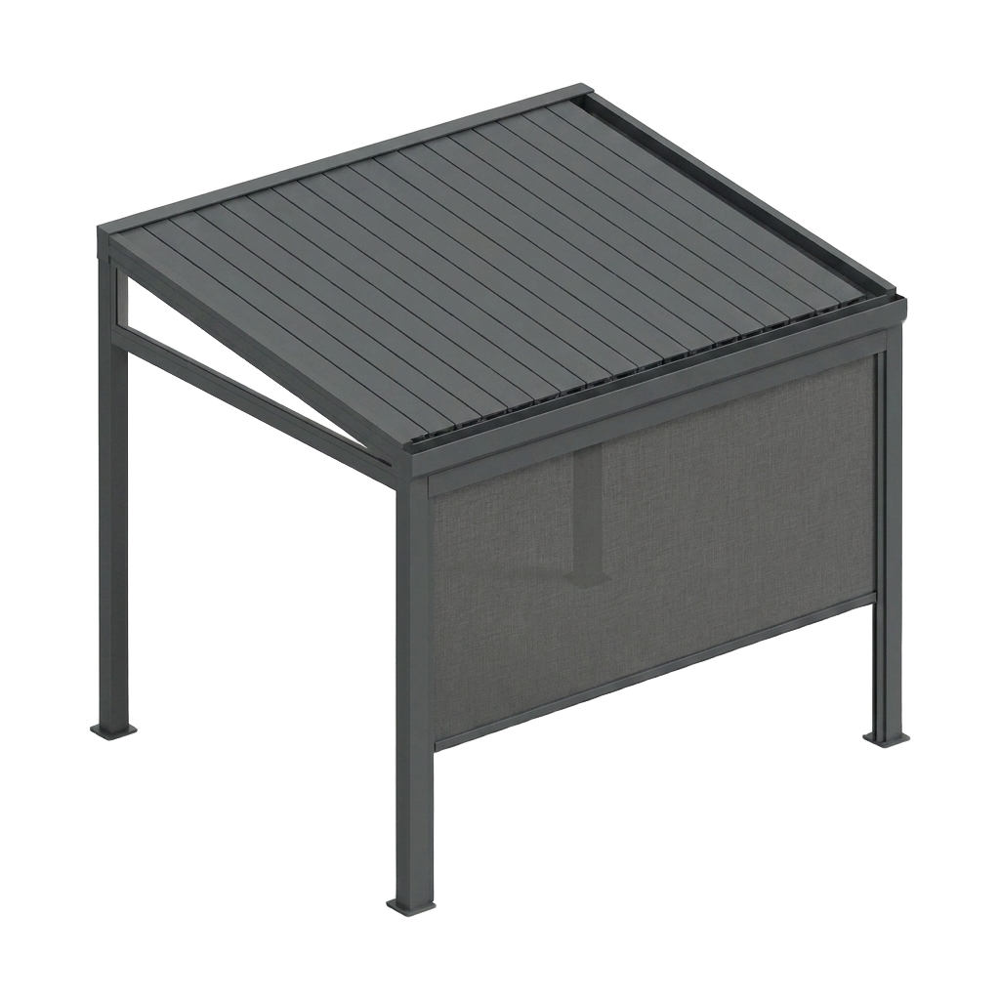
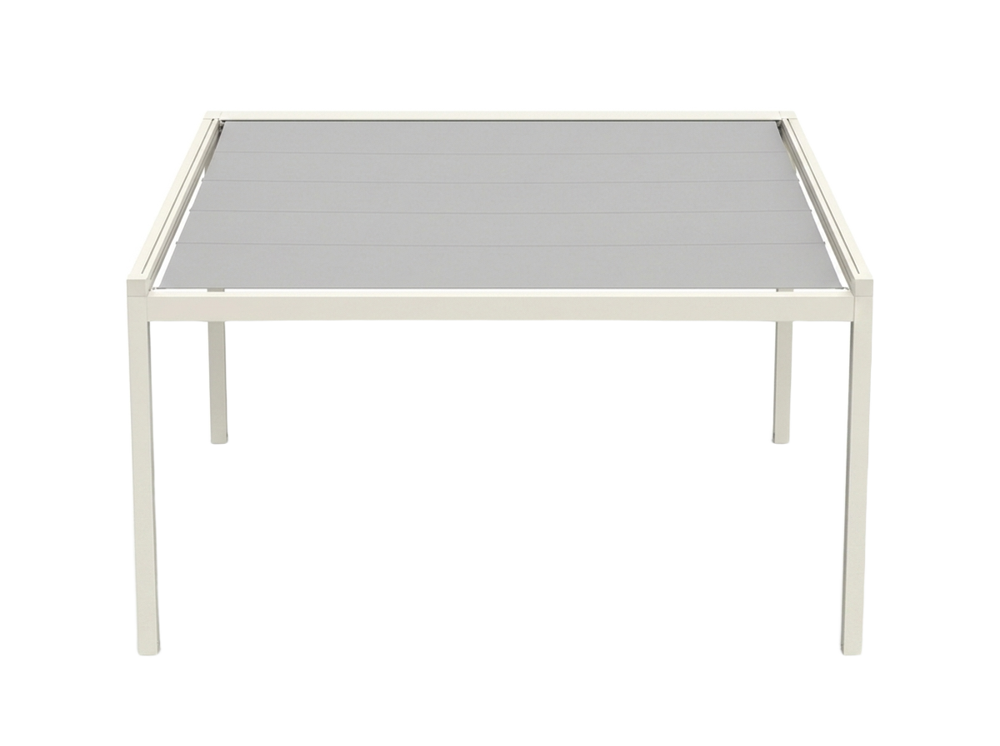
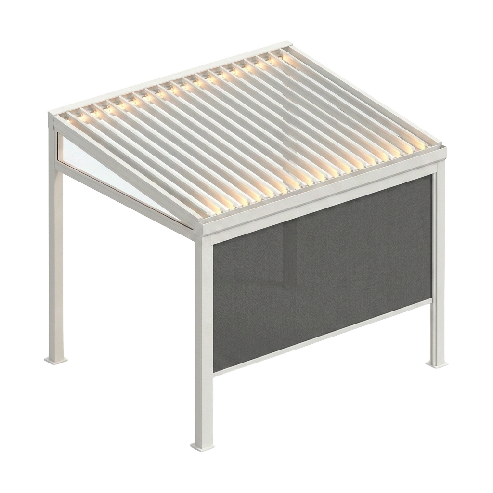
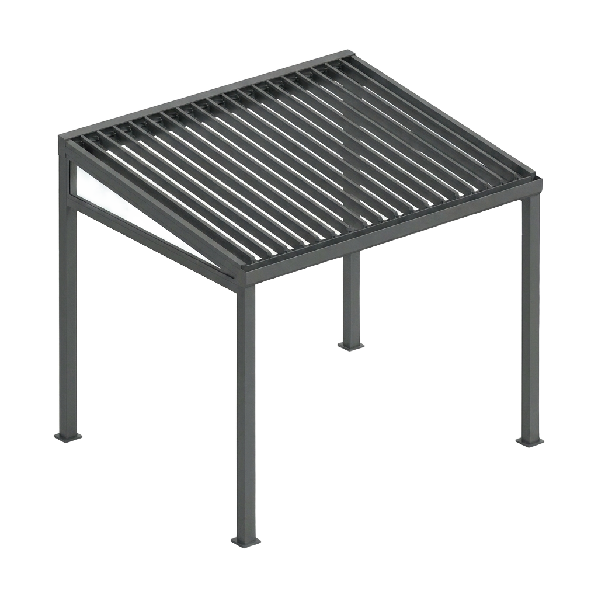
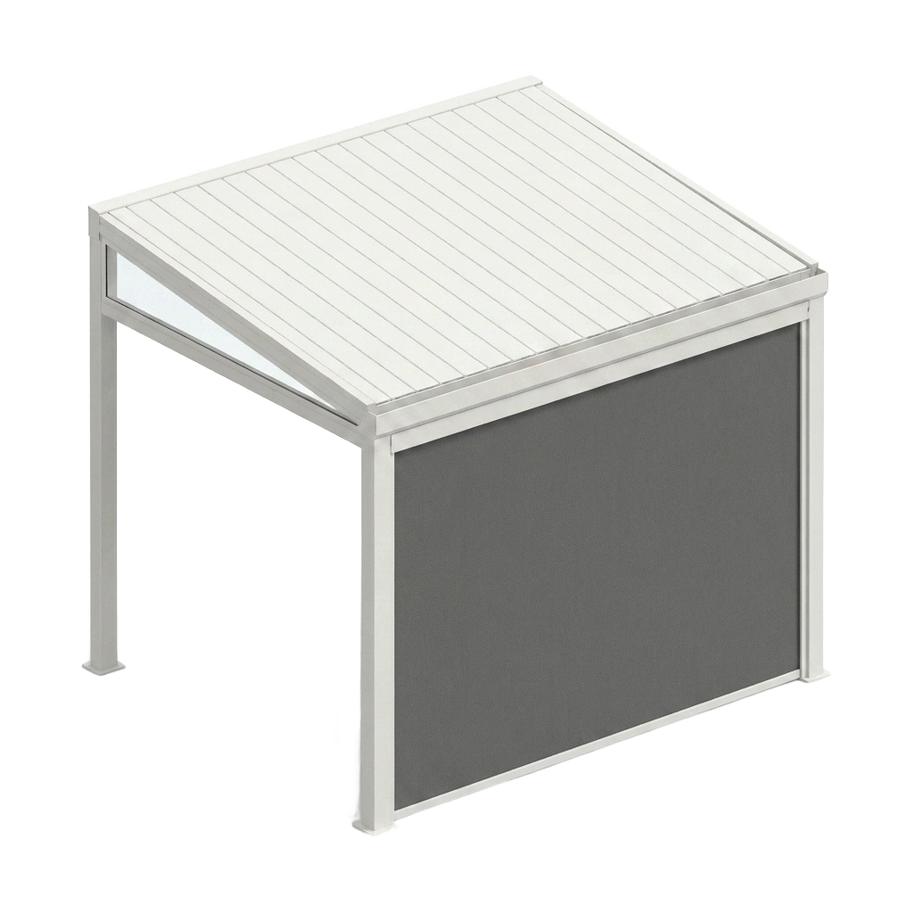

Lucky Zonwering levert en monteert pergola's met verstelbaar lamellendak op maat in Oss en heel Noord-Brabant. Kantel de aluminium lamellen open voor zon en lucht of dicht voor schaduw en regenbescherming — modern design, vakwerk sinds 1975 en beoordeeld met een 5,0 op Google uit 124 reviews.
Een pergola met lamellendak geeft u volledige controle over uw terras. Met een druk op de knop kantelt u de aluminium lamellen precies zo ver als u wilt: helemaal open voor maximale zon en frisse lucht, op een kier voor gefilterd licht en ventilatie, of dicht voor schaduw en bescherming tegen een regenbui. Zo bepaalt u zelf hoe u buiten zit — bij uw woning in Oss of waar dan ook in Brabant.
Als familiebedrijf leveren wij sinds 1975 buitenleven op maat. Doordat wij de pergola met onze eigen monteurs plaatsen, heeft u maar één aanspreekpunt: van het gratis inmeten tot de oplevering en de service daarna. Hieronder leest u alles over een pergola op maat.
Van een luxe vrijstaande pergola tot een tegen de gevel geplaatst lamellendak met geïntegreerde screens of een doekoplossing — alles op maat gemaakt en in de kleur van uw keuze.

Strak aluminium frame met kantelbare lamellen — design en comfort.
Offerte aanvragen
Lamellen open voor volop zon, daglicht en frisse lucht.
Offerte aanvragen
Lamellen dicht voor schaduw en bescherming tegen regen.
Offerte aanvragen
Geïntegreerde screens voor schaduw, privacy en luwte.
Offerte aanvragen
Een uitschuifbaar doek als zachtere, sfeervolle variant.
Offerte aanvragen
Tegen de gevel of vrij in de tuin — wij maken het passend.
Offerte aanvragenEen pergola van Lucky Zonwering combineert modern design met volledige controle over uw buitenruimte. Dit zijn de belangrijkste voordelen:
Het kantelbare lamellendak past u in seconden aan het weer aan. Open voor zon, dicht voor schaduw of bij regen — u beslist zelf hoeveel licht en warmte u toelaat.
Door de lamellen op een kier te zetten, ontstaat er natuurlijke luchtcirculatie. Zo blijft het ook op warme dagen aangenaam onder uw pergola, zonder dat het warmte vasthoudt.
Kies voor sfeervolle led-verlichting in de lamellen of balken en zijdelingse screens. Zo geniet u 's avonds van een verlicht terras en zit u overdag beschut tegen zon en wind.
De strakke aluminium lijnen van een pergola passen bij zowel moderne als landelijke woningen en geven uw tuin een luxe, eigentijdse uitstraling.
De volledig aluminium constructie roest niet, vervormt niet en vraagt nauwelijks onderhoud. Een pergola van Lucky gaat jarenlang zorgeloos mee.
Benieuwd naar de mogelijkheden en een richtprijs? Stel online uw buitenleven op maat samen of vraag direct een gratis offerte aan.
Onze pergola's worden uitgevoerd in onderhoudsarm aluminium in vier tijdloze kleuren — passend bij elke woning en tuin.
Met het verstelbare lamellendak van uw pergola regelt u precies hoeveel zon, schaduw en ventilatie u wilt. Kantel de lamellen open voor een zonnige middag of dicht als de bui komt — comfort dat met het weer meebeweegt.

Vul uw pergola aan met geïntegreerde screens en sfeerverlichting. Zo zit u overdag beschut tegen zon, wind en inkijk en geniet u 's avonds van een warm verlicht terras — een echte buitenkamer in uw tuin.

Een pergola laten plaatsen moet vooral ontzorgen. Daarom regelen wij alles uit één hand, in vier heldere stappen:
Wij komen vrijblijvend bij u langs in Oss of elders in Brabant, bekijken uw terras en adviseren over type, afmetingen, kleur en opties. Daarna meten we alles nauwkeurig op.
Uw pergola wordt op maat gemaakt in onderhoudsarm aluminium met een robuust lamellenmechanisme. Geen tussenhandel, maar maatwerk uit één hand — met een korte levertijd en een scherpe prijs.
Onze eigen, vaste monteurs plaatsen en stellen de pergola netjes, veilig en vakkundig af en laten uw terras schoon achter. Geen onderaannemers, maar vakmensen die u kent.
Ook na de montage blijft Lucky Zonwering bereikbaar voor service en onderhoud. Dankzij onze eigen voorraad bent u bij een vraag of storing snel weer geholpen.
Wilt u juist een overkapping die uw terras áltijd droog houdt en volop daglicht doorlaat? Bekijk dan onze veranda op maat met glasdak. Ook die maken en monteren wij volledig op maat in heel Noord-Brabant.
Ons bedrijf en onze voorraad zitten aan de Ussenstraat 26A in Oss. Doordat we lokaal werken, zijn de lijnen kort: we meten snel in, leveren op maat en blijven bereikbaar voor service. Of u nu in de stad woont of in een dorp in de Maasregio — wij komen langs voor advies, montage en nazorg.
Naast Oss plaatsen wij pergola's in de omliggende dorpen en steden:
Bekijk gerust onze projecten in en rond Oss of lees waarom klanten voor Lucky kiezen.
Een pergola met lamellendak is een aluminium overkapping met kantelbare lamellen in het dak. U draait de lamellen open voor zon en frisse lucht of dicht voor schaduw en bescherming tegen regen. Lucky Zonwering levert deze louvered roof pergola's volledig op maat in Oss en heel Noord-Brabant.
Een pergola heeft een dak van verstelbare lamellen die u open en dicht kantelt, waardoor u zelf de zon, schaduw en ventilatie regelt. Een veranda heeft een vast glasdak dat het terras altijd droog houdt. Lucky Zonwering levert beide op maat en helpt u tijdens het gratis advies aan huis de juiste keuze te maken.
Ja. Wanneer de lamellen volledig gesloten zijn, sluit het lamellendak waterdicht af en wordt het regenwater via geïntegreerde goten en de staanders afgevoerd. Zo blijft u droog en zit u toch buiten. Lucky Zonwering stelt het systeem bij de montage zorgvuldig af.
Ja. Lucky Zonwering levert en monteert pergola's met lamellendak volledig op maat met eigen monteurs. Van het gratis inmeten tot de montage en de nazorg heeft u één aanspreekpunt, met een scherpe prijs en een korte levertijd.
Ja. Een pergola van Lucky Zonwering is uit te breiden met geïntegreerde led-verlichting in de lamellen of balken en met zijdelingse screens. Zo creëert u 's avonds sfeer en zit u overdag beschut tegen zon, wind en inkijk.
Vaak mag een pergola vergunningsvrij worden geplaatst, mits deze binnen de regels voor afmetingen en plaatsing op uw perceel valt. Dit verschilt per gemeente en situatie. Lucky Zonwering denkt mee en helpt u tijdens het advies aan huis op weg met de regels in uw gemeente in Oss en Noord-Brabant.
Onze pergola's zijn standaard leverbaar in antraciet, wit, crème en zwart, in onderhoudsarm aluminium. Lucky Zonwering adviseert u welke kleur het beste past bij uw woning en tuin.
De prijs van een pergola hangt af van de afmetingen, de kleur en opties zoals geïntegreerde led-verlichting en screens. Lucky Zonwering meet gratis bij u in en geeft daarna een heldere offerte op maat, geheel vrijblijvend.
Weinig. De aluminium constructie van een pergola van Lucky Zonwering is onderhoudsarm, roest niet en hoeft alleen af en toe schoongemaakt te worden. Het lamellenmechanisme is robuust en gaat jarenlang mee.
Ja. Vanuit Oss zijn onze monteurs dagelijks actief in heel Noord-Brabant, waaronder Berghem, Heesch, Uden, Veghel, Ravenstein en 's-Hertogenbosch. Lucky Zonwering verzorgt advies, montage en nazorg in uw gemeente.